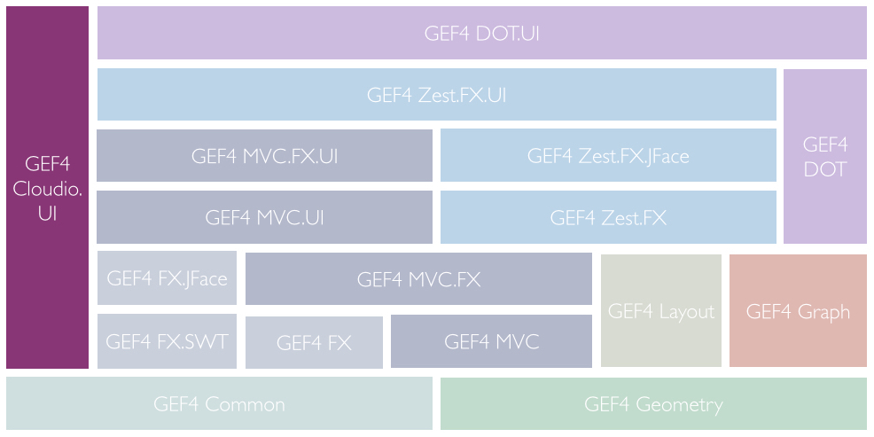
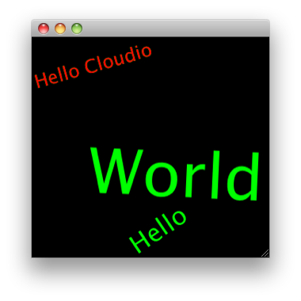

Note to non-wiki readers: This documentation is generated from the Eclipse wiki - if you have corrections or additions it would be awesome if you added them in the original wiki page .
The GEF4 Cloudio component provides support for visualizing tag clouds within a dedicated SWT Canvas or JFace viewer. It is internally decomposed into the single Cloudio.UI module. There are also a couple of undeployed Cloudio UI Examples that demonstrate usage of the (still internal) API. The user documentation is provided in terms of the GEF4 Cloudio User Guide.

The Cloudio.UI module of GEF4 Cloudio realizes the Tag cloud view end-user features, as outlined in the GEF4 Cloudio User Guide. It does not provide any public API yet, but exposes its internal API (guarded by an x-friends directive).
The Cloudio.UI module of GEF4 Cloudio provides SWT- and JFace-based support for rendering tag clouds.
The {Root} package provides an SWT widget ( TagCloud) and a JFace viewer ( TagCloudViewer), which support rendering of word clouds.
A TagCloud is a special org.eclipse.swt.widgets.Canvas, dedicated to display a tag cloud. It expects the to be rendered words and related properties (weight, angle, color, font) to be represented as Word input elements and can be created as follows:
public static void main(String [] args) {
final Display display = new Display();
final Shell shell = new Shell(display);
TagCloud cloud = new TagCloud(shell, SWT.NONE);
// Generate some dummy words - color, weight and fontdata must
// always be defined.
List<Word> words = new ArrayList<Word>();
Word w = new Word("Hello");
w.setColor(display.getSystemColor(SWT.COLOR_DARK_CYAN));
w.weight = 1;
w.setFontData(cloud.getFont().getFontData().clone());
words.add(w);
w = new Word("Cloudio");
w.setColor(display.getSystemColor(SWT.COLOR_DARK_GREEN));
w.setFontData(cloud.getFont().getFontData().clone());
w.weight = 0.5;
w.angle = -45;
words.add(w);
shell.setBounds(50,50, 300, 300);
cloud.setBounds(0,0, shell.getBounds().width, shell.getBounds().height);
// Assign the list of words to the cloud:
cloud.setWords(words, null);
shell.open();
while (!shell.isDisposed()) {
if (!display.readAndDispatch()) display.sleep();
}
display.dispose();
}
The result should look similar to this (String positions are assigned by random):
A TagCloudViewer is a special org.eclipse.jface.viewers.ContentViewer, that renders a tag cloud. It is internally based on a
TagCloud and enhances the functionality of the tag cloud: it is possible to select
and deselect elements by mouse click, to zoom in or out using the mouse wheel and to display tool tips on words. The
TagCloudViewer expects an org.eclipse.jface.viewers.IStructuredContentProvider and an ICloudLabelProvider. The words that are to be rendered in the
TagCloud are inferred by queuing the ICloudLabelProvider for labels of the elements returned by the org.eclipse.jface.viewers.IStructuredContentProvider. The properties of the words (weight, color, font, angle) are retrieved via the ICloudLabelProvider for each word as well.
A TagCloudViewer can be used as follows:
import java.util.ArrayList;
import java.util.Arrays;
import java.util.List;
import org.eclipse.jface.viewers.BaseLabelProvider;
import org.eclipse.jface.viewers.ISelectionChangedListener;
import org.eclipse.jface.viewers.IStructuredContentProvider;
import org.eclipse.jface.viewers.IStructuredSelection;
import org.eclipse.jface.viewers.SelectionChangedEvent;
import org.eclipse.jface.viewers.StructuredSelection;
import org.eclipse.jface.viewers.Viewer;
import org.eclipse.swt.SWT;
import org.eclipse.swt.graphics.Color;
import org.eclipse.swt.graphics.Font;
import org.eclipse.swt.graphics.FontData;
import org.eclipse.swt.widgets.Display;
import org.eclipse.swt.widgets.Shell;
import org.eclipse.zest.cloudio.ICloudLabelProvider;
import org.eclipse.zest.cloudio.TagCloud;
import org.eclipse.zest.cloudio.TagCloudViewer;
public class TagCloudViewerSnippet {
static class CustomLabelProvider extends BaseLabelProvider implements ICloudLabelProvider {
private Font font;
public CustomLabelProvider(Font font) {
this.font = font;
}
@Override
public String getLabel(Object element) {
return element.toString();
}
@Override
public double getWeight(Object element) {
return Math.random();
}
@Override
public Color getColor(Object element) {
return Display.getDefault().getSystemColor(SWT.COLOR_GREEN);
}
@Override
public FontData[] getFontData(Object element) {
return font.getFontData();
}
@Override
public float getAngle(Object element) {
return (float) (-90 + Math.random() * 180);
}
@Override
public String getToolTip(Object element) {
return element.toString();
}
}
public static void main(String [] args) {
final Display display = new Display();
final Shell shell = new Shell(display);
TagCloud cloud = new TagCloud(shell, SWT.NONE);
final TagCloudViewer viewer = new TagCloudViewer(cloud);
// A simple content provider for a list of elements
viewer.setContentProvider(new IStructuredContentProvider() {
@Override
public void dispose() { }
@Override
public void inputChanged(Viewer viewer, Object oldInput,
Object newInput) {}
@Override
public Object[] getElements(Object inputElement) {
return ((List<?>)inputElement).toArray();
}
});
// A simple label provider (see above)
viewer.setLabelProvider(new CustomLabelProvider(cloud.getFont()));
// Demo of an selection listener
viewer.addSelectionChangedListener(new ISelectionChangedListener() {
@Override
public void selectionChanged(SelectionChangedEvent event) {
IStructuredSelection selection = (IStructuredSelection) viewer.getSelection();
System.out.println("Selection: " + selection);
}
});
// Demo data
List<String> data = new ArrayList<String>();
data.add("Hello");
data.add("World");
data.add("Hello Cloudio");
shell.setBounds(50,50, 300, 300);
cloud.setBounds(0,0, shell.getBounds().width, shell.getBounds().height);
// Set the input of the viewer
viewer.setInput(data);
// Set initial selection:
viewer.setSelection(new StructuredSelection(Arrays.asList("Hello Cloudio")));
shell.open();
while (!shell.isDisposed()) {
if (!display.readAndDispatch()) display.sleep();
}
display.dispose();
}
}
The result will look similar to this:

The Layout package provides the contract ( ILayouter) for algorithms that perform placement of words during tag cloud generation, as well as a related default implementation ( DefaultLayouter).
An ILayouter is used by a
TagCloud to compute the actual placement of words inside a given area. The DefaultLayouter places words similar to the algorithm used by
Wordle.
The Util package provides a two-dimensional tree structure to store non-overlapping rectangles ( RectTree), a custom rectangle implementation ( SmallRect) with short precision used by it (which will probably be replaced with org.eclipse.gef4.geometry.planar.Rectangle in the future), and a CloudMatrix, which represents a drawable area within a tag cloud through a RectTree.
A RectTree is a two-dimensional tree structure to store non-overlapping rectangles that are represented through RectNodes, which are internally based on a short-precision rectangle representation (SmallRect).
A CloudMatrix represents the drawable area within a tag cloud (and information about which word is placed at which coordinate), internally based on a
RectTree.